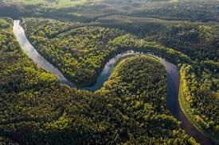
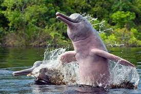
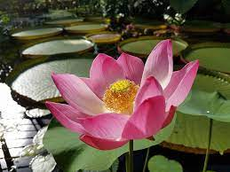

| El amazonas y sus especies |
| Pagina sobre la importancia del amazonas |
| El Amazonas |
|
Es una vasta región de la parte horizontal y septentrional de América del Sur que comprende la selva tropical de la cuenca del río Amazonas. Las adyacentes regiones de Las Guayanas y el Gran Chaco también poseen selvas tropicales, por lo que muchas veces se las considera parte de la Amazonia, La selva amazónica es el bosque tropical más extenso del mundo, abarcando alrededor de 7 millones de km² en nueve países, principalmente Brasil, Perú y Colombia. Es conocida por su biodiversidad excepcional y su contribución a la regulación del ciclo de carbono y el cambio climático. Las anomalías en la tasa de CO2 están vinculadas a periodos secos en la región amazónica, lo que la convierte en un indicador global del CO2 atmosférico. En 2011, fue designada como una de las siete maravillas naturales del mundo. |
| Ecosistema |
|
La selva amazónica, situada en torno al río Amazonas y su cuenca, se caracteriza por su exuberante vegetación siempre verde, favorecida por las altas temperaturas. Reconocida como el "Pulmón del Planeta", mantiene un equilibrio climático al igualar las emisiones y absorciones de CO2 y O2. La pérdida de biodiversidad en la selva se relaciona con su destrucción, y se observa evidencia de esto en el área del río Caquetá, donde se mantuvo un sistema anterior de bosque selvático utilizando técnicas de manejo del suelo. La selva amazónica alberga una amplia variedad de flora, aves, anfibios e insectos, incluyendo muchas especies aún no clasificadas. |
| Fauna |
|
La selva amazónica alberga una amplia variedad de mamíferos, como monos, jaguares, pumas, tapires y ciervos. Sus aguas también son hogar de delfines, incluyendo el delfín rosado. Los reptiles incluyen tortugas acuáticas y terrestres, caimanes, cocodrilos y una variedad de serpientes, incluyendo la anaconda, el ofidio más grande del mundo. Este ecosistema es excepcional en términos de biodiversidad aviar, con numerosas especies de aves como guacamayos, tucanes, águilas arpías y muchas otras con coloridos plumajes. Aproximadamente el 20% de todas las especies de aves en el mundo se encuentran en la selva amazónica. Además, para los entusiastas del acuarismo, la selva amazónica es una fuente rica en especies de peces que se encuentran en comercios y acuarios en todo el mundo. |
| Flora |
|
La selva amazónica alberga el 20% de las especies mundiales de plantas, incluyendo la planta Victoria amazónica con hojas de más de cuatro metros de diámetro en las lagunas del río Amazonas. El ecosistema comprende una diversidad de árboles como itahuba, caricari, tajibos, cedro y otros, con la mitad de las especies de madera siendo exóticas. La selva amazónica también es rica en plantas medicinales que pueden tratar diversas enfermedades, desde úlceras hasta problemas cardíacos. En las lagunas, la llamativa Victoria amazonica, la planta acuática más grande del mundo, puede alcanzar hasta 2 metros de diámetro. La zona está adornada con flores silvestres de gran belleza y diversidad, que aportan colorido desde los ríos hasta el monte. |
| Riesgo de colapso ecologico |
|
El ecosistema amazónico enfrenta un alto riesgo de colapso debido al cambio climático, con una extensión de la temporada de sequía en los últimos años. La deforestación, estimada en alrededor del 20% del bosque amazónico hasta 2017 (800,000 hectáreas), y los incendios son factores destructivos clave. Un estudio de datos satelitales revela que los incendios están más relacionados con las actividades agrícolas que con la sequía, y alrededor del 20% de las quemas agrícolas afectan áreas de bosque primario. Las áreas clasificadas como territorios indígenas tienen menos quemas según datos satelitales. |